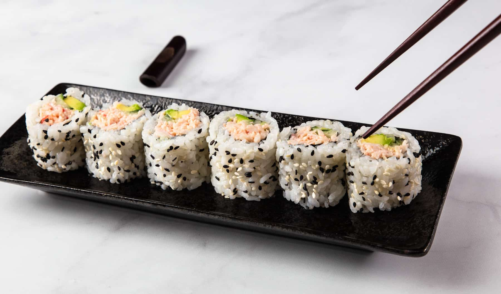

California Roll

Description
This simple but delicious roll was created by Hidekazu Tojo in Toronto
to appeal to his Western customers. He said that many of his
customers that ordered the roll came from California so he decided
to call it the California Roll!
Ingredients
- Avocado
- Imitation crab
- Kewpie mayo
- Nori (seaweed)
- Cucumbers
- Rice
- Rice vinegar
- Sugar and salt
Steps
- Wash and cook rice in a rice cooker
- Slice avocado and cucumbers into long slices
- Shred imitation crab by hand
- Massage in kewpie mayo with the crab
- Combine cooked rice with rice vinegar, sugar, and salt
- Lay out a sushi mat
- Layer rice mix, seaweed, imitation crab mix, avocado, cucumber
- Start rolling from the bottom of the mat
- Cut sushi into pieces and enjoy!